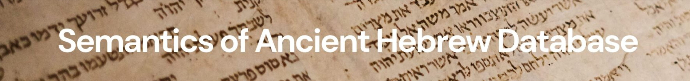

Raymond de Hoop
Webpage: https://independent.academia.edu/RaymonddeHoop
Raymond (1958) is an independent scholar, working as editor and webmaster for the SAHD team. He published a massive volume on Genesis 49 and a number of articles on the meaning of Hebrew words as well as studies on the Masoretic accentuation.
Contributions
בֶּקַע – half a shekel
גַּלְגַּל – wheel, well-wheel
דְּלִי – bucket
מַלְבֵּן – brick-mould
מָאוֹר – light
קַלַּחַת – stewpot
רַהַט – drinking-trough
שֹׁ֫קֶת – drinking-trough